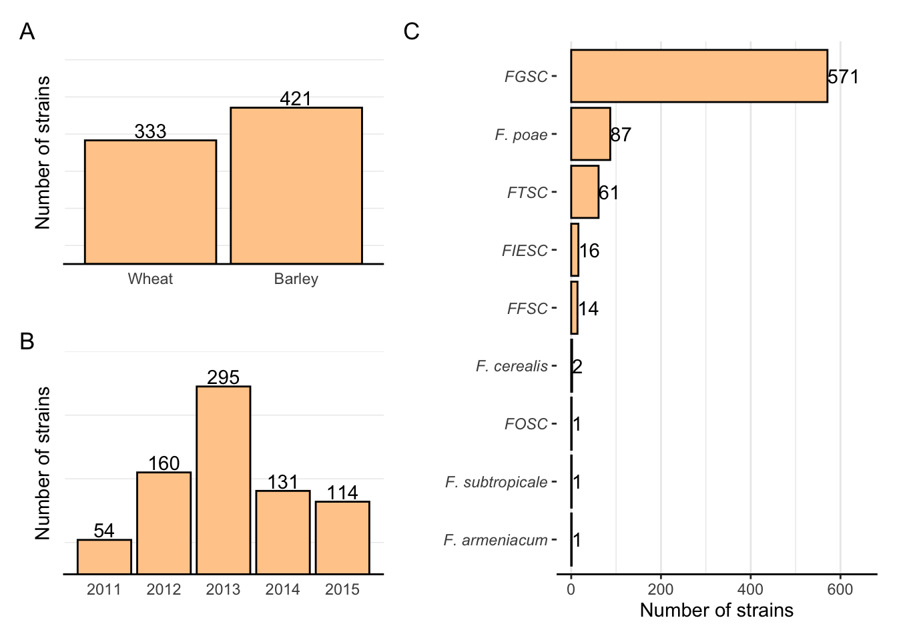
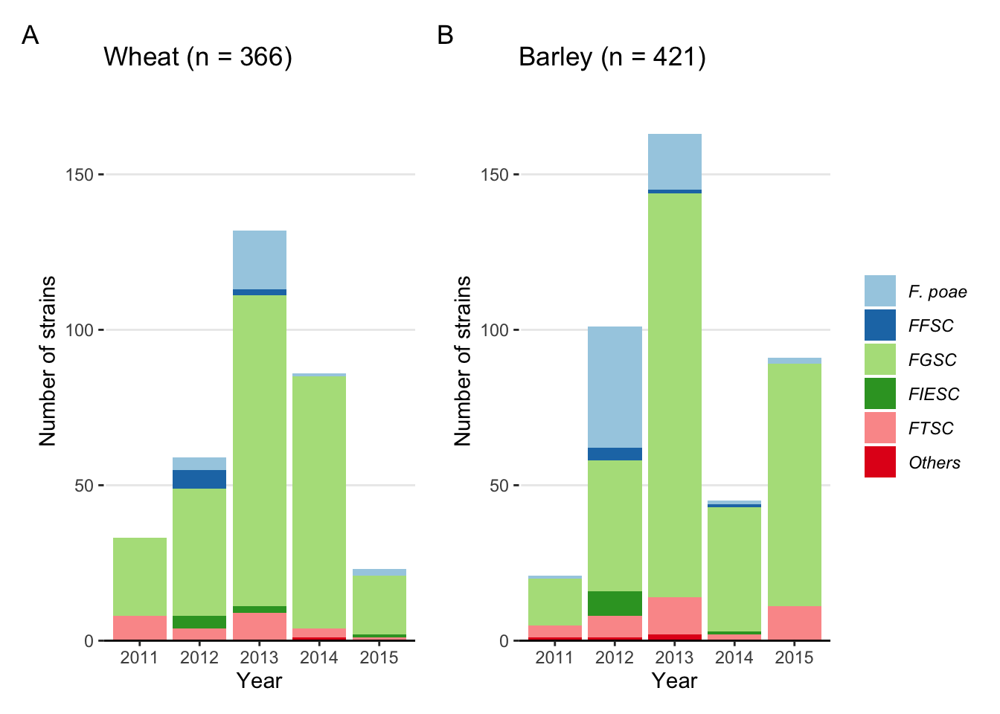

my_theme <- theme_bw() +
theme(
legend.position = "none",
axis.line.x = element_line(color = "black", size = 0.5),
axis.line.y = element_line(color = "white", size = 1),
axis.text.y = element_blank(),
axis.ticks = element_blank(),
panel.border = element_blank(),
panel.grid.major.x = element_blank(),
panel.grid.minor.x = element_blank(),
panel.grid.major.y = element_blank())
my_theme2 <- theme_bw() +
theme(
legend.position = "none",
axis.line.x = element_line(color = "black", size = 0.5),
axis.line.y = element_line(color = "white", size = 1),
panel.border = element_blank(),
panel.grid.major.y = element_blank(),
panel.grid.minor.y = element_blank(),
axis.text.y = element_text(face = "italic"))
my_theme3 <- theme_bw() +
theme(
legend.position = "none",
axis.line.x = element_line(color = "black", size = 0.5),
axis.line.y = element_line(color = "white", size = 1),
panel.border = element_blank(),
panel.grid.major.x = element_blank(),
panel.grid.minor.y = element_blank(),
legend.text = element_text(face = "italic"))Fig1A <- fus %>%
tabyl(Host) %>%
ggplot(aes(reorder(Host, n), n, label = n))+
geom_col(fill = "#ffcc99", color = "black", size = 0.5)+
theme(axis.text.x=element_text(face="italic"))+
geom_text(position = position_dodge(width = 1),
hjust = 0.5, vjust = -0.2) +
labs(x = "", y = "Number of strains")+
scale_y_continuous(expand = c(0, 0), limits = c(0, 600)) +
my_themeFig1C <- fus %>%
tabyl(Complexes) %>%
ggplot(aes(reorder(Complexes, n),n, label = n))+
geom_col(fill = "#ffcc99", color = "black", size = 0.5)+
coord_flip()+
theme(axis.text.x=element_text(face="italic"))+
geom_text(position = position_dodge(width = 1),
hjust = 0) +
labs(x = "", y = "Number of strains")+
scale_y_continuous( limits = c(0, 650)) +
my_theme2fig1 <- ((Fig1A / Fig1B) | Fig1C) + plot_annotation(tag_levels = 'A')
ggsave("figs/fig1.png", width =6, height =4)
fig1
Fig2A <- fus %>%
filter(Host == "Wheat") %>%
tabyl(Complex2, Year) %>%
gather(year, n, 2:6) %>%
ggplot(aes(year, n, fill = Complex2))+
geom_col()+
scale_fill_brewer(palette = "Paired")+
theme_light()+
labs(x = "Year", y = "Number of strains", fill = "", title = "Wheat (n = 366)")+
scale_y_continuous(expand = c(0, 0), limits = c(0, 180)) +
my_theme3Fig2B <- fus %>%
filter(Host == "Barley") %>%
tabyl(Complex2, Year) %>%
gather(year, n, 2:6) %>%
ggplot(aes(year, n, fill = Complex2))+
geom_col()+
scale_fill_brewer(palette = "Paired")+
theme_light()+
labs(x = "Year", y = "Number of strains", fill = "", title = "Barley (n = 421)")+
scale_y_continuous(expand = c(0, 0), limits = c(0, 180)) +
my_theme3patch <- Fig2A + Fig2B & theme(legend.position = "right")
p1 <- patch + plot_layout(guides = "collect")+ plot_annotation(tag_levels = 'A')
ggsave("figs/fig2.png", width =7, height =4)
p1
Fig3A <- fus %>%
filter(Complex2 == "FGSC") %>%
filter(Host == "Wheat") %>%
tabyl(Species, Year) %>%
gather(year, n, 2:6) %>%
ggplot(aes(year, n, fill = Species, label = n))+
geom_col()+
scale_fill_brewer(palette = "Dark2")+
theme_light()+
labs(x = "", y = "Number of strains", fill = "FGSC", title = "Wheat (n = 266)")+
scale_y_continuous(expand = c(0, 0), limits = c(0,130)) +
my_theme3Fig3B <- fus %>%
filter(Complex2 == "FGSC") %>%
filter(Host == "Barley") %>%
tabyl(Species, Year) %>%
gather(year, n, 2:6) %>%
ggplot(aes(year, n, fill = Species))+
geom_col()+
scale_fill_brewer(palette = "Dark2")+
theme_light()+
labs(x = "", y = "Number of strains", fill = "FGSC", title = "Barley (n = 305)")+
scale_y_continuous(expand = c(0, 0)) +
my_theme3Fig3C <- fus %>%
filter(Complex2 == "FTSC") %>%
filter(Host == "Wheat") %>%
filter(Species != "F. acuminatum") %>%
tabyl(Species, Year) %>%
gather(year, n, 2:6) %>%
ggplot(aes(year, n, fill = Species))+
geom_col()+
scale_fill_brewer(palette = "Set2")+
theme_light()+
labs(x = "Year", y = "Number of strains", fill = "FTSC", title = "Wheat (n = 25)")+
scale_y_continuous(expand = c(0, 0), limits = c(0,12)) +
my_theme3Fig3D <- fus %>%
filter(Complex2 == "FTSC") %>%
filter(Host == "Barley") %>%
tabyl(Species, Year) %>%
gather(year, n, 2:6) %>%
ggplot(aes(year, n, fill = Species))+
geom_col()+
scale_fill_brewer(palette = "Set2")+
theme_light()+
labs(x = "Year", y = "Number of strains", fill = "FTSC", title = "Barley (n = 36)")+
scale_y_continuous(expand = c(0, 0), limits = c(0,12)) +
my_theme3